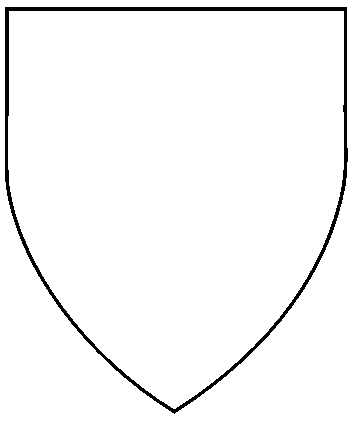
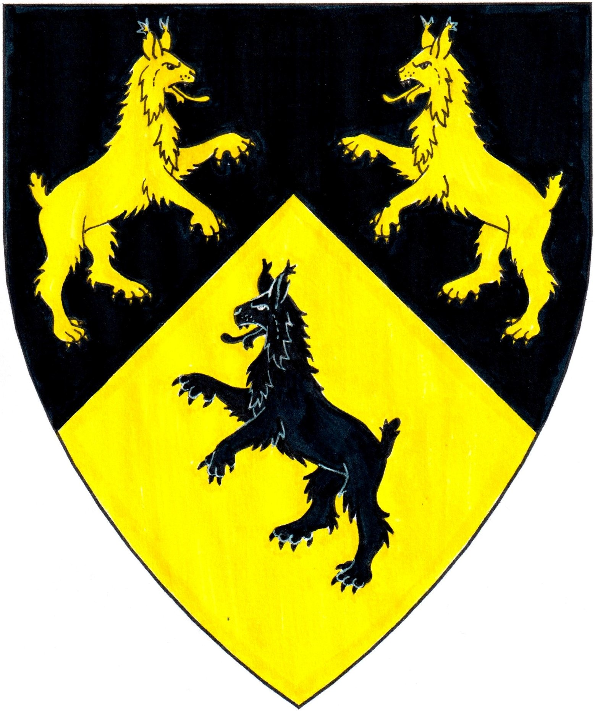
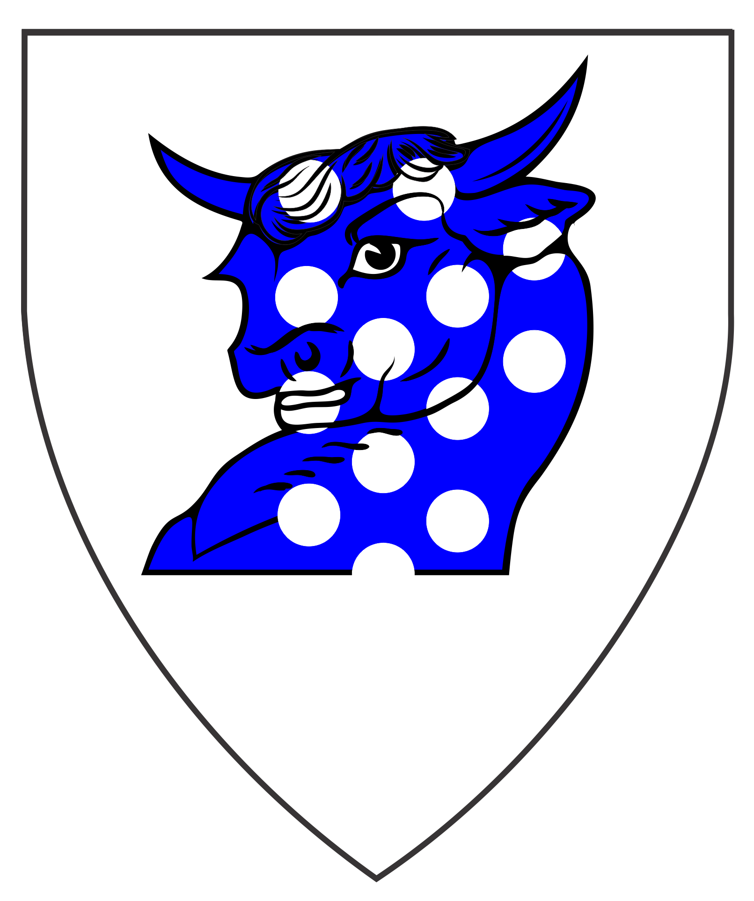
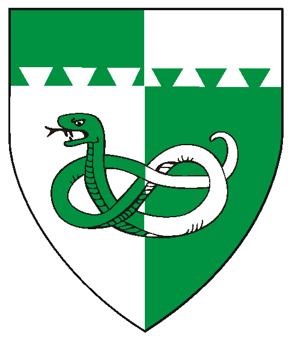
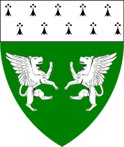
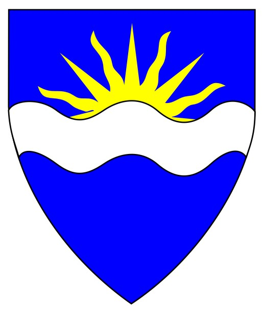
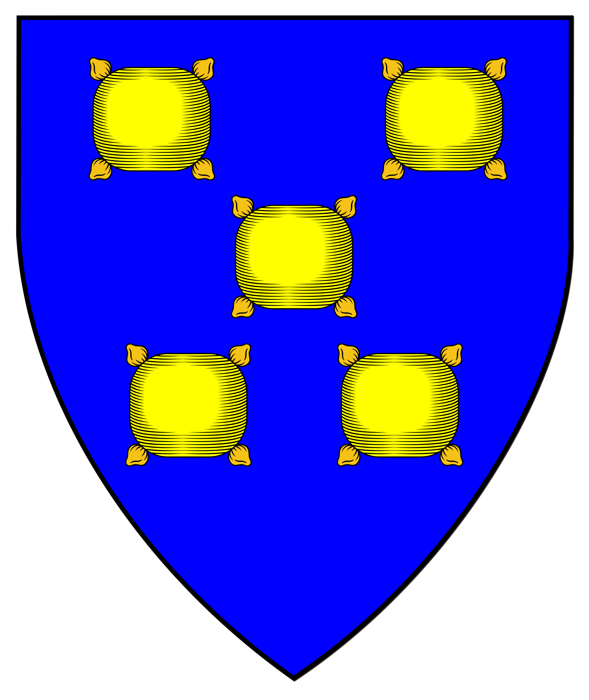

Anyone with the following: 
has no with the College of Arms
Anyone with this border:
Most of the information herein is based on the West Kingdom Order of Precedence,

Alexander of Eskalya
Carrie Lowell
Elisa Lipham "Mossie"
William of the Two Fords
Elizabeth Wittelsbach
Uilliam Bruinthurh
Ash of the North (aka Aesc Arngrimsdottir)
Siobhan ingen Tuathail
Eva Abel
Krok Vyšehrad
Nika of Tursko
Arthur of Hrafnaforðr
Joan of Hrafnaforðr
Lidda verch Llewelyn
Miřa of Hrafnaforðr
Ursula of Hrafnaforðr
Collin Abel
Erik the Far Traveller (Colum's Monkey Puppet Mascot)
Eloise Broussard
Henry Luton
Hrafn inn Trggvi
Magnus the Red
Ember of Hrafnafjorðr
Guilford of Selviergard
Molly of Selviergard
Fenneag of Winter's Gate
Beathag of Selviergard
Heinrich Wilhelm
Johanna Englehardt
Úlfrikr inn gamli Ragnarsson
Lora de Estwode
Bróðir Bondar
Elizabeth Wittelsbach
Jasmine of Winter's Gate
Onguen of Oertha
Roland of Winter's Gate
Bror Gustafson
Calliope of Winter's Gate
Thaloria de Ditton
Alaric of Shadowood     
To the Patents (Knights, Laurels, Pelicans)
To the Grants of Arms, Leaves of Achievement, and Court Baronies : Part I
To the AA's Part V
Awards of Arms Part VI
To the AA's Part VII
Blazons without visual shield/designs are in the works.
has their AA but are not in the official Order of Precedence
or the O.P.'s of other Kingdoms.
Contact me to forward corrections or with name/spelling preferences.
AWARDS OF ARMS
Armigers of Oertha (continued)
from January A.S. LIV (2020)
the Reign of Gregor and Bella
to the present
Keisha of Eskalya
Award of Arms January 18, A.S. LIV (2020) Gregor & Bella
Ulrich Gregorsson
Award of Arms September 26, A.S. LVI (2021) Miles & Jitka
Unna of Eskalya
Per chevron sable and Or, three lynxes rampant those in chief combatant counterchanged.
Registered 7/2021
Award of Arms September 26, A.S. LVI (2021) Miles & Jitka
Drustic of Eskalya
Award of Arms July 23, A.S. LVII (2022) Cruscillus & Vicana
Janis of Eskalya
Award of Arms July 23, A.S. LVII (2022) Cruscillus & Vicana
Myrra of Eskalya
Award of Arms December 3, A.S. LVII (2022) Cyrus & Caitríona
Hildigard von Lingenfeld
Award of Arms December 18, A.S. LVII (2022) Søren & Alienor
River Dagmarsdottir
Award of Arms January 7, A.S. LVII (2023) Cyrus & Caitríona
Aidan Haak
Award of Arms January 21, A.S. LVII (2023) Søren & Alienor
Joelle de Lis
Award of Arms January 21, A.S. LVII (2023) Søren & Alienor
Draven of Oertha
Award of Arms January 22, A.S. LVII (2023) Kenric & Dagmar
Chris of Pavlok Gorod
Award of Arms April 1, A.S. LVII (2023) Cruscillus & Eilis
Rhiannon O'Briein
Award of Arms May 21, A.S. LVIII (2023) Cruscillus & Eilis
Sextus Tiberious Alexios
Award of Arms May 27, A.S. LVIII (2023) Cruscillus & Eilis
Brianna Haak
Award of Arms June 10, A.S. LVIII (2023) Cruscillus & Eilis
Sigvaldi Haakonsson
Award of Arms June 10, A.S. LVIII (2023) Cruscillus & Eilis
Bohne Ottosdottor
Award of Arms July 15, A.S. LVIII (2023) Ciar
Aurelie l'archere (aka Ariel of Winter's Gate)
Award of Arms September 3, A.S. LVIII (2023) Lucius and Anne
Dylan of Pavlok Garod
Award of Arms September 16, A.S. LVIII (2023) Lucius and Anne
Elizabeth inghean Thomas
Award of Arms September 16, A.S. LVIII (2023) Lucius and Anne
Arthur of Earngyld
Award of Arms January 6, A.S. LVIII (2024) Lucius and Anne
Elijah of Earngyld
Award of Arms January 6, A.S. LVIII (2024) Lucius and Anne
Ivar of Earngyld
Award of Arms January 6, A.S. LVIII (2024) Lucius and Anne
Elizabeth Wittelsbach
Award of Arms March 16, A.S. LVIII (2024) Hans & Elena
Avis of Ravensfjord
Award of Arms June 23, A.S. LIX (2024) Conor & Isa
Kennaty of Ravensfjord
Award of Arms June 23, A.S. LIX (2024) Conor & Isa
Freya of Selviergard
Award of Arms July 20, A.S. LIX (2024) Hans & Elena
Onóra Sparrow
Award of Arms July 20, A.S. LIX (2024) Hans & Elena
Award of Arms August 24, A.S. LIX (2024) Floki & Cempestrae
Thorius Brutus
Award of Arms September 7, A.S. LIX (2024) Floki & Cempestrae
Award of Arms October 19, A.S. LIX (2024) Floki & Cempestrae
Award of Arms October 19, A.S. LIX (2024) Floki & Cempestrae
Award of Arms October 19, A.S. LIX (2024) Floki & Cempestrae
Award of Arms November 2, A.S. LIX (2024) Floki & Cempestrae
Award of Arms November 2, A.S. LIX (2024) Floki & Cempestrae
Award of Arms December 7, A.S. LIX (2024) Floki & Cempestrae
Award of Arms December 7, A.S. LIX (2024) Floki & Cempestrae
Award of Arms December 7, A.S. LIX (2024) Floki & Cempestrae
Award of Arms December 7, A.S. LIX (2024) Floki & Cempestrae
Award of Arms December 7, A.S. LIX (2024) Floki & Cempestrae
Award of Arms December 14, A.S. LIX (2024) Thorfinn and Tullia
Award of Arms December 14, A.S. LIX (2024) Thorfinn and Tullia
Award of Arms December 14, A.S. LIX (2024) Thorfinn and Tullia
Award of Arms December 14, A.S. LIX (2024) Thorfinn and Tullia
Award of Arms December 14, A.S. LIX (2024) Thorfinn and Tullia
Award of Arms January 18, A.S. LIX (2025) Floki & Cempestrae
Award of Arms January 18, A.S. LIX (2025) Floki & Cempestrae
Award of Arms January 18, A.S. LIX (2025) Floki & Cempestrae
Award of Arms January 18, A.S. LIX (2025) Floki & Cempestrae
Award of Arms July 19, A.S. LX (2025) Bartram & Søren
Award of Arms July 19, A.S. LX (2025) Bartram & Søren
Award of Arms August 2, A.S. LX (2025) Bardolf & Sabiha
Award of Arms November 1, A.S. LX (2025) Bardolf & Sabiha
Award of Arms November 1, A.S. LX (2025) Bardolf & Sabiha
Award of Arms August 30, A.S. LX (2025) Bardolf & Sabiha
Award of Arms December 13, A.S. LX (2025) Bardolf & Sabiha
Award of Arms January 17, A.S. LX (2026) Bardolf & Sabiha
Award of Arms January 17, A.S. LX (2026) Kolskeggr & Katelinen
Award of Arms January 17, A.S. LX (2026) Kolskeggr & Katelinen
Award of Arms March 14, A.S. LX (2026) Søren & Clare
Award of Arms April 14, A.S. LX (2026) Søren & Clare
Award of Arms May 23, A.S. LXI (2026) Søren & Clare
Award of Arms May 31, A.S. LXI (2026) Søren & Clare
Award of Arms May 31, A.S. LXI (2026) Søren & Clare
Award of Arms May 31, A.S. LXI (2026) Søren & Clare
Award of Arms July 18, A.S. LXI (2026) Miles & Tusya
Award of Arms July 18, A.S. LXI (2026) Miles & Tusya
Award of Arms July 18, A.S. LXI (2026) Miles & Tusya
Registered Devices without Award of Arms
Anyone can register a 'device' before receiving an 'Award of Arms'.
The following moved, or paused participation, and/or haven't been given an Award of Arms (AA):
You don't even have to be a paid member. See your local Herald.
Argent, a bull's head couped at the shoulders azure semy of plates.
Registered 2/1986
Eleanor of Ynys Taltraeth
Per pale argent and vert, a serpent nowed and a chief dovetailed counterchanged.
Registered 8/2005
James of Acre
Vert, two winged mastiffs combattant argent and a chief ermine.
Registered 7/2013 (via Atenveldt)
Conall Ó Coiligh
Azure, issuant from a fess wavy argent, a demi-sun Or.
Registered 10/2014
Pillow of Oertha
Azure, in saltire five pillows Or.
Registered 10/2019
To the Armorial Start Page
Starting January, AS XXXV (2002 to 2010)
Starting January, AS LIV (2020) to Present
Some artwork provided by owners of arms depicted.
Most artwork on these pages created with CorelDraw!3-12 by Khevron.